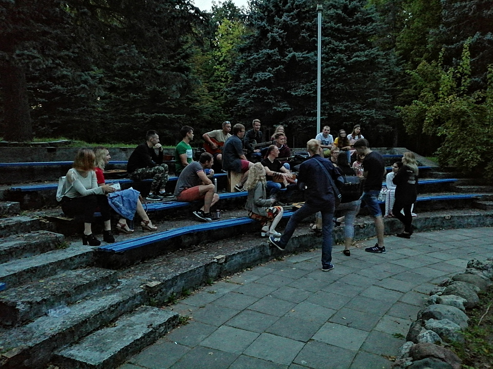
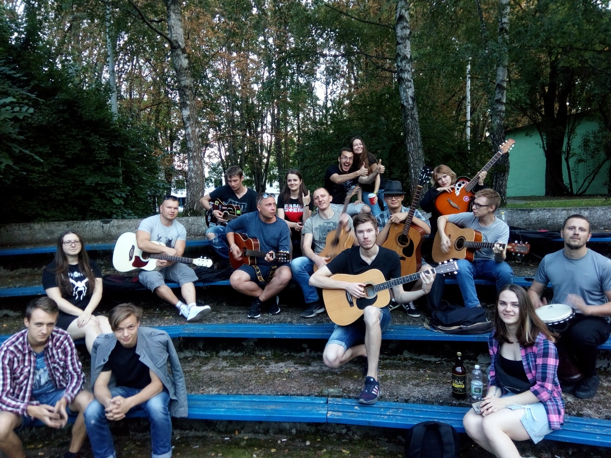

Если тебе нечего делать вечером, но ты любишь играть в покер, крокодила, любишь походы, песни под гитару, стихи и т.д. ... Ты хочешь показать себя и посмотреть на других, то ты у цели! Присоединяйся!
Салют любители гитары, гитарной музыки и просто люди, которые проводят своё время круто. Мы иногда собираемся и поём песни под гитару, выбираемся на природу и играем в разные игры! Всегда рады новым интересным людям! Если ты любишь петь песни, играть на гитаре либо просто х.ч -Велком! Добавлю в общий чат где можно пообщаться и вся инфа о наших веселых вечерах!
1. Главная цель группы - сбор людей по интересам. Сходки с песнями под гитару\походы\активный отдых - всё сюда, но музыкальная направленность первична. На сходках не бухаем!
2. Существует чат, который в первую очередь создан для лампового общения. Вся остальная интересующая вас информация находится в группе, но все идеи зарождаются здесь ;)
3. Инициатива собраться/затусить может исходить от любого участника чата;
4. Формат встреч такой, каким вы его видите сами, но основная часть на данный момент иногда собирается поиграть на гитарах и попеть песни)
5. Информация о встречах(и только о них) выкладывается на стене группы - если хотите быть в курсе и не читать беседку - просто включите уведомления от нашего сообщества.
- Возрастная группа 16+, но если вам 40 а в душе 16, то лично я против не буду ;)
- Если вас задевают выражения/формулировки/высказывания - выясняйте это в личке;
- Коммерческие предложения и реклама(если вы выглядите заинтересованной стороной) - удаление;
- Острые политические/религиозные/интимные темы, если они вызывают серьёзные конфликты участников, переносятся в личку, иначе - предупреждение, затем удаление;
- Намеренный спам/флуд - предупреждение - затем удаление;
- Выкладывание каких-либо порнографических материалов - немедленное удаление;
- Забивание личных сообщений участников предложениями непристойного/рекламного характера - удаление;
- Новых людей добавляем только после сходок.
Пока всё. Критика учитывается, сообщение редактируется.
Администраторг. Минск